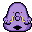
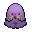

Pokédex / #317

Swalot #317
Poison
It swallows anything whole. It sweats toxic fluids from its follicles to douse foes.
Generation 3 · Hoenn

Stats
| Attack | 73 | |
|---|---|---|
| Defense | 83 | |
| Sp. Atk | 73 | |
| Sp. Def | 83 |
In the wild
| Wild level | 40–50 |
|---|---|
| HP | 100 |
| Experience | 10 |
| Egg groups | Amorphous |
Evolution
- Evolves from Gulpin at level 30.
Moves
| Level | Move | Type | Category | Power | Energy | Cooldown | Effect | |
|---|---|---|---|---|---|---|---|---|
| 1 | Tackle | Normal | Physical | 15 | 15 | 1s | Tackle is one of the most common and basic moves a Pokemon learns. It deals damage with no additional effects. | |
| 5 | Acid Spray | Poison | Special | 40 | 55 | 9s | Acid Spray inflicts damage and lowers the target's Special Defense by two stages. | |
| 10 | Sludge | Poison | Special | 65 | 70 | 10s | Sludge does damage and has a 30% chance of poisoning the target. | |
| 15 | Poison Gas | Poison | Status | – | 30 | 7s | Poison Gas poisons the target. It will fail if the target is Poison or Steel-type. | |
| 20 | Wring Out | Normal | Special | 120 | 90 | 18s | The power of Wring Out varies between 1 and 120 depending on how much HP the opponent has. The more HP the opponent has, the more damage this move will do. Its damage is calculated by the following formula: Base Power = 120 x (Opponent's Current HP/Opponent's Maximum HP) | |
| 25 | Yawn | Normal | Status | – | 100 | 95s | In the turn that Yawn is used, the only effect will be the user yawning at the target. At the end of the next turn, the target (if still active) will fall asleep unless it gets affected by a major status condition in the meantime, a status-protecting move is used (like Safeguard or Uproar), or the battle ends. | |
| 35 | Gastro Acid | Poison | Status | – | 120 | 90s | The user hurls up its stomach acids on the target. The fluid eliminates the effect of the target's Ability. | |
| 40 | Sludge Bomb | Poison | Special | 90 | 105 | 21s | Sludge Bomb inflicts damage and has a 30% chance of poisoning the target. | |
| 45 | Gunk Shot | Poison | Physical | 120 | 125 | 18s | Gunk Shot deals damage and has a 30% chance of poisoning the target. | |
| 50 | Stockpile | Normal | Status | – | 90 | 10s | Raises the user's Defense and Special Defense by one stage and charges up power for use with companion moves Spit Up or Swallow. | |
| 50 | Swallow | Normal | Status | – | 90 | 120s | Swallow recovers a varying amount of HP depending on how many times the user has used Stockpile. It recovers 25%, 50% or 100% of the user's maximum HP if the user stockpiled one, two or three times respectively. | |
| 50 | Spit Up | Normal | Special | 100 | 150 | 30s | Spit Up deals varying damage depending on how many times the user used Stockpile. The base power is 100, 200 or 300 if the user stockpiled one, two or three times respectively. | |
| 65 | Belch | Poison | Special | 60 | 60 | 13s | The user lets out a damaging belch at the target. |
Field abilities
StrengthRock Smash
Special abilities
Liquid OozeSticky Hold
Egg moves
Technical machines
Bullet SeedDouble TeamDream EaterEarthquakeExplosionHyper BeamIce BeamProtectRain DanceRestShadow BallShock WaveSludge BombSolar BeamSubstituteToxic
Drops
| Item | Amount | Chance | |
|---|---|---|---|
| bottle of poison | 1–10 | 100% | |
| venom pendant | 1 | 70% | |
| black sludge | 1 | 46.7% | |
| shadow rock | 1 | 25% | |
| petrified goo | 1 | 17.5% | |
 | swalot doll | 1 | 0.1% |
| Toxic Plate | 1 | 0.05% | |
| held poison barb | 1 | 0.02% | |
| TM 61 | 1 | 0.01% |